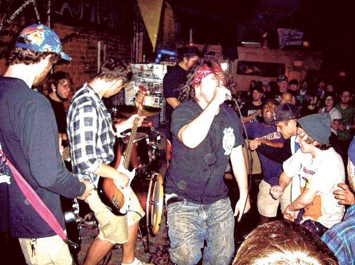

PUNK HISTORY !
HOW DID PUNK COME TO BE ?
Welcome to our exploration of the rich and dynamic history of punk—a movement that has reshaped music, fashion, and culture for over four decades. From its rebellious roots in the 1970s to its lasting influence today, punk is more than just a genre. its a lifestyle!
THE BIRTH OF PUNK (Mid-1970s)
Punk emerged in the mid-1970s as a reaction against the excesses of mainstream rock music and societal norms. Influenced by earlier garage rock and protopunk bands like The Velvet Underground, The Stooges, and MC5, punk artists sought to reclaim music’s raw energy and authenticity. Key cities like New York and London became hotbeds for this burgeoning movement. In New York, venues like CBGB hosted groundbreaking acts such as The Ramones, Blondie, and Talking Heads. Meanwhile, London saw the rise of iconic bands like The Sex Pistols and The Clash.
THE PUNK SOUND
The early punk sound was characterized by fast tempos, simple song structures, and aggressive instrumentation. Lyrics often addressed themes of rebellion, alienation, and social issues, reflecting the frustrations of a generation. The raw energy of songs like "Anarchy in the U.K." and "Blitzkrieg Bop" captured the spirit of defiance that defined the punk ethos.
THE DIY AND PUNK FASHION
One of the hallmarks of punk culture is its DIY (do-it-yourself) ethos. Punk musicians often recorded and distributed their music independently, creating labels like SST and Dischord that prioritized artistic freedom over commercial success. This spirit extended to fashion as well, with punk styles featuring leather jackets, ripped jeans, band t-shirts, and bold hairstyles like mohawks and bright colors. Iconic designers like Vivienne Westwood played a crucial role in defining punk fashion, which became a symbol of rebellion against mainstream trends.
THE EVOLUTION OF PUNK (1980s and beyond)
As the 1980s approached, punk began to splinter into various subgenres. Hardcore punk emerged, characterized by faster tempos and more aggressive sounds, with bands like Black Flag and Minor Threat leading the charge. Pop punk gained popularity with bands like Green Day and Blink-182, blending catchy melodies with punk’s rebellious spirit. Meanwhile, post-punk explored more experimental sounds, with groups like Joy Division and Siouxsie and the Banshees pushing the boundaries of the genre.
EXPLORE MORE
- Discover Iconic Punk Albums
- Learn About Punk Subgenres
- Get Involved in the Punk Scene